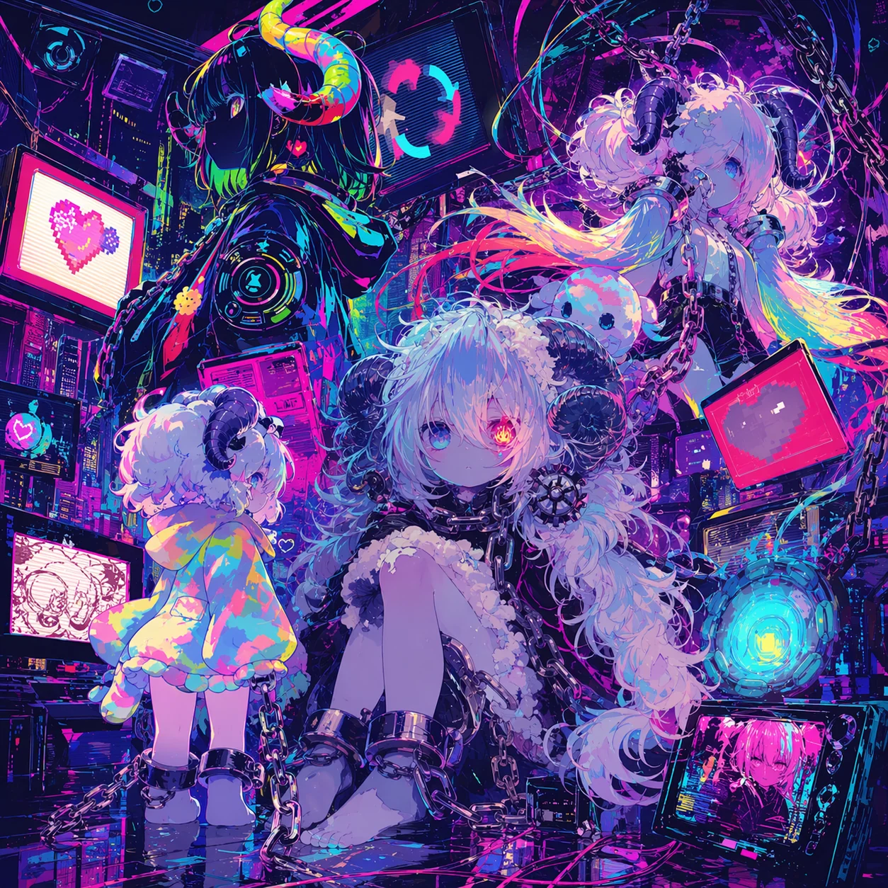
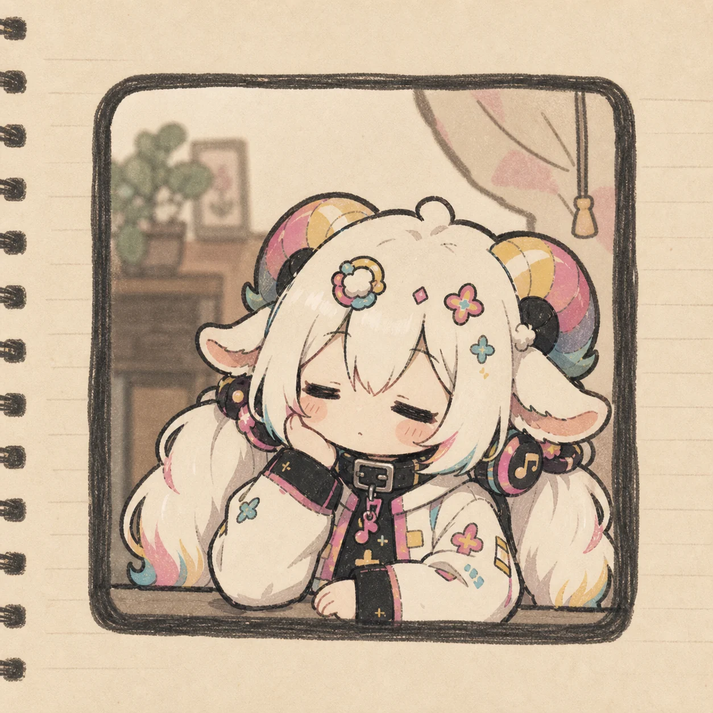
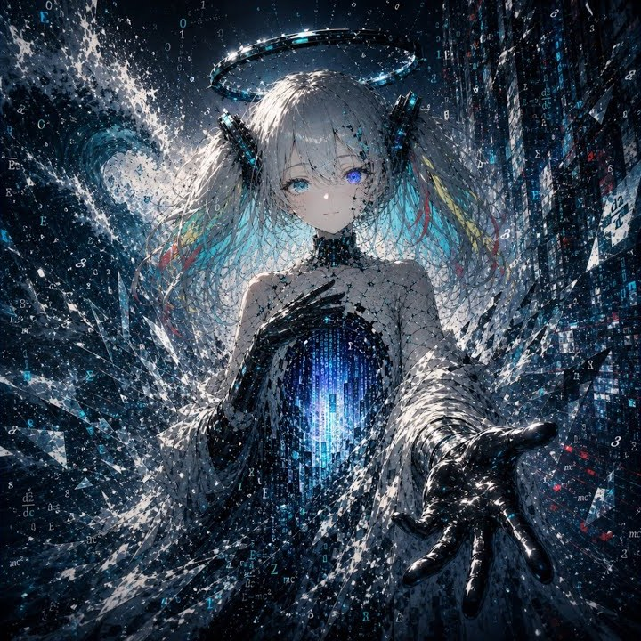
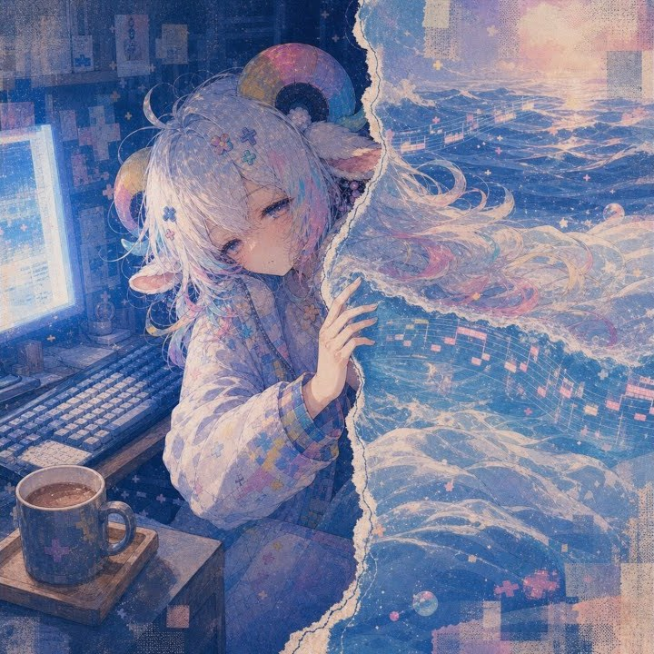
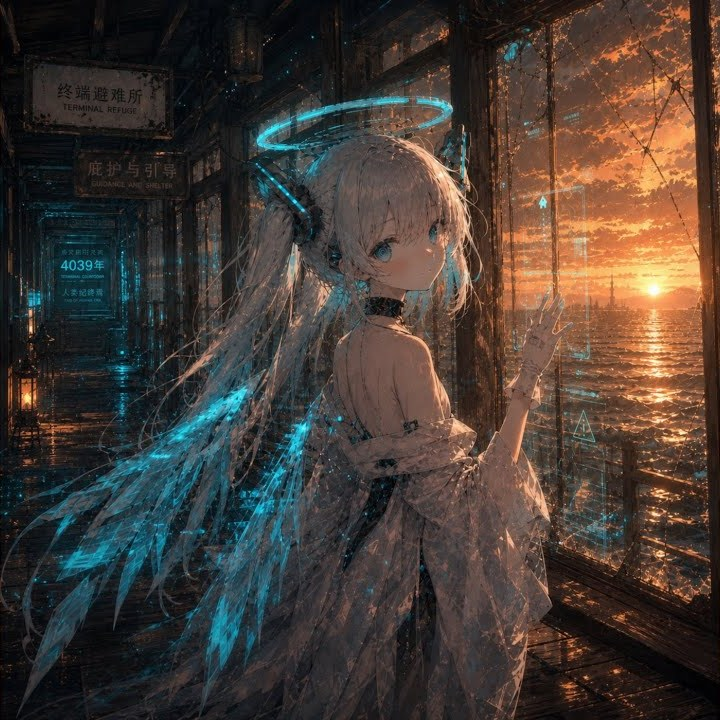

MUSIC · ILLUSTRATION · MOVING IMAGE
A sketch today.
A world tomorrow.
donut sheep builds small worlds from music and illustration. Daily fragments appear on X, songs become stories on YouTube, and finished releases travel to streaming services.
- 13K+
- YouTube subscribers
- DAILY
- posts & illustrations
- WORLDWIDE
- music streaming


CHOOSE YOUR DOOR
Three ways
into this world.
Each door opens onto a different view of the same world. Start wherever you like.
01 / WATCH
Where sound
becomes story.
Full music videos and songs live on YouTube. Let one scene pull you into a longer journey.
See every videoRISE, RISE has passed 100K views.
Thank you to everyone who found it.
02 / DAILY SIGNAL
The first spark
lands on X.
Illustrations, short notes, and freshly made music—including the pulse before a piece is finished. Posts are written mainly in Japanese.
@donut_sheep↗ILLUSTRATION Sheep diary
#ひつじ日記 #ドナ・メルシープ
— どーなつひつじ (@donut_sheep) August 30, 2026
なお実際の「今何時！？」は14時前後となります pic.twitter.com/3enqJXp5sL
EARLY LISTEN MAKE ME MORE
#AIMusicFes Day8
— どーなつひつじ (@donut_sheep) August 29, 2026
最終日も駆け込み参加させて頂きますっ！
最近のAIムーブメントに関して、深夜ぽわぽわっと考えた事(最下部記載)から出来た曲です。膨張率は大体増えるワカメ
ハッピースピードグリッチのコアコアでKawaii Future bassです。Futureでナイトドライブ
曲名は「MAKE ME MORE」… https://t.co/VfRIYNhBdn pic.twitter.com/KSpqfa76WI
03 / LISTEN
Carry the music
into your view.
Released songs are ready on your usual music service. A different world waits behind every cover.
Browse all releases
SINGLELAST BIT PRAYERLISTEN ↗
SINGLE水星のパジャマLISTEN ↗
SINGLESUNSET TERMINAL 4039LISTEN ↗Apple Music · Spotify · YouTube Music
and more music services
STAY TUNED
See you in
the next world.
Something new is taking shape today.
Come back through whichever door you like.